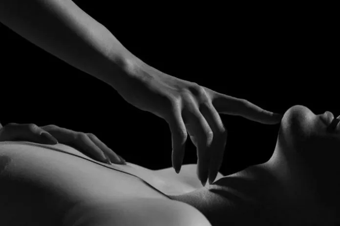
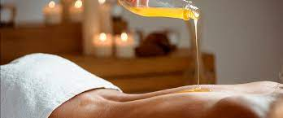
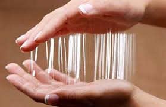
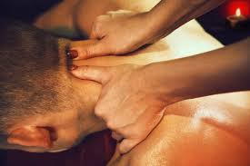

Explorando Nuevas Sensaciones: Diversos Estilos de Masajes Sensuales.
Los masajes son un placer necesario, un momento de relajación, una pausa en la ajetreada rutina, pero también pueden ser una instancia para despertar tus sentidos y sentir excitación a través de todo tu cuerpo. Son una excelente previa para comenzar con cualquier interacción sexual, sea penetrativa o no.
Masaje relajante
Los podemos hacer con cualquier tipo de aceite especializado para masajes, no es necesario ser expertx solo basta con dejar fluir tus movimientos, mover tus manos al ritmo de la música, procurar que la habitación tenga un aroma agradable y de vez en cuando, acercarte para que tu compañerx sienta tu respiración que a medida que avanza la sesión, se agita más. A mi particularmente, me funcionan muy bien los aceites con aromas porque a la vez que estímulo a un otre, me estimulo yo también. Si quiero añadir más sensaciones, ocupo velas para masajes. Calor, tacto y aceite son una excelente combinación, importante es siempre probar en nuestro brazo la distancia para que no sea muy fuerte para nuestro acompañante.
Masaje Nuru
Nuru significa resbaladizo. Se realiza idealmente con les participantes completamente desnudes y se ocupa todo el cuerpo para ejercer placer. Se coloca una cantidad generosa de gel y se esparce por todos lados. Ten la precaución de hacerlo a ras de piso con mantas, tatami o colchón por que al ser tan resbaladizo podrías caerte. Si ocupas una cama, cúbrela con algo que puedas ensuciar porque sí, queda un desastre, pero créeme, es una experiencia única que amarás. Sentir como se deslizan los brazos, como hacen presión los codos o los pies, el rose de los pechos, el trasero contra el otro, es realmente excitante y puede dar pie a mucho más. He tenido el placer de ver como personas que nunca experimentaron de forma anal se retuercen y literalmente se abren a la posibilidad, cuando masajeo esta zona.
Henko o Masajes con las uñas
Lo bautice con este nombre porque el término henko significa un cambio del que no hay retorno. ¿Te han rascado la cabeza o la espalda alguna vez solo usando las uñas? Es increíble, pero más increíble aún es ver como el cuerpo reacciona en cada zona y en cada persona de manera distinta, algunxs se excitan, se ríen, se relajan hasta se duermen o lloran ¡es impresionante lo que las caricias provocan! He visto de todo por separado y en la misma sesión. Para realizarlo pongo a mi acompañante en una silla para masajes o camilla. Una parte muy hermosa de la sesión, es pedirles que aflojen su cuerpo y que dejen caer su peso hacia atrás, entonces los puedo contener, les apoyo en mi hombro derecho primero e izquierdo después y finalmente en medio, su nuca apoyada en mi frente, de esta manera su pecho queda expuesto y aprovecho de pasar mis uñas por esa zona, cuello y brazos. Es realmente maravilloso como se genera una conexión preciosa, la persona en calma se entrega y deja sorprender por la sensación que generan mis uñas en su piel, ideal es realizarlo con aceites para masajes para que deslicen más fácilmente.
Cualquiera de estos masajes se puede potenciar usando un Micrófono Vibrador, el cual a través de sus patrones de vibración amplifica todas las sensaciones. La estimulación con este tipo de juguete no se tiene que circunscribir solo a la zona genital. La piel es nuestro órgano más extenso y podemos literalmente estimular de pies a cabeza.